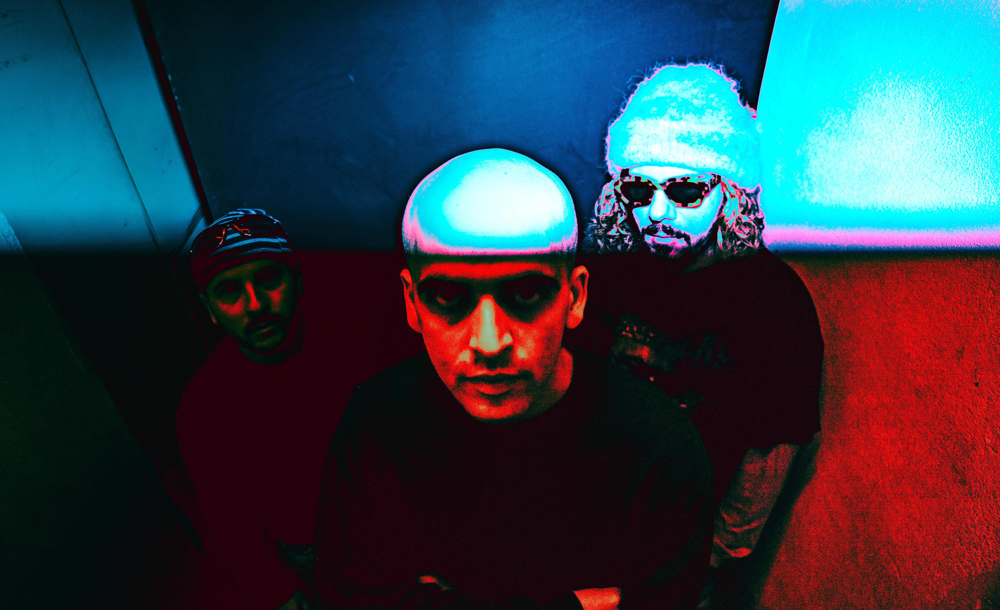

Nave Amiga / Band Shooting

Shooting with Nave Amiga, an experimental metal band.
Three members of the band in front of my lens: raw textures, dark tones and a lot of noise in the air.
Experimental, heavy, a bit strange — exactly how I like it.
Settimana Santa Easter in Caulonia


I spent Easter in Caulonia, my hometown in the south of Italy.
Between processions and memories, I created this cover inspired by the Holy Week — “Settimana Santa”.
Hardcore Night / Live Event Recap

Berthold City was in Paris at Cirque Électrique — hardcore from LA.
Berthold City was there, hardcore from Los Angeles. Supernova from London (HC), along with bands and influences from the Belgian hardcore scene.
A straight edge themed event, intense atmosphere, raw energy, and unity in the crowd.
Small shoot in the garage with Leonardo
Did a little shoot with this guy over here
➜

Took some inspiration from Jonti Wild’s work for Bring Me The Horizon


aura dj cover by me


Hey everyone! I’ve been away for a little while, but I’m back now. I took quite a few photos in February, and I’m excited to share some of them with you here.
Each image tells a story, capturing moments, expressions, and creative energy. You can also check out the dedicated pages for each person featured.
Enjoy browsing through these snapshots of February!
Creative Cover for Trafficanti d’Arte
Trafficanti d’Arte is a tattoo studio and ink & apparel brand based in Milan, Via Mercantini 15. Led by internationally awarded tattoo artist Marco Galdo, a pioneer of ornamental, geometric, symmetrical and dotwork tattooing in Italy, the studio approaches the body as a true living canvas.
Alongside him, Stefania Salis creates beautiful garments entirely by hand, shaping fabric with the same care and intention that Marco shapes bodies with ink. Each piece reflects a shared vision: art that dresses the body, whether through tattoo or clothing.
Two crafts. One language. Art that lives on the body.
Studio Atmosphere & Creative Process

Inside the studio, every project begins with dialogue. Each design is carefully developed to reflect personal identity, symbolism, and harmony with the body’s natural structure.
The creative process blends geometry, symmetry and precision. Every line is intentional. Every dot carries rhythm.
More than a tattoo session, it becomes a collaborative artistic ritual.
Handcrafted Apparel Collection

The apparel collection reflects the same philosophy as the tattoo work: precision, balance, and intention.
Each garment is handmade, carefully constructed to highlight form and movement. Fabrics are selected with attention to texture and durability.
A wearable extension of the studio’s artistic universe.